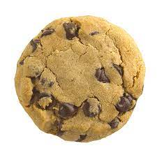

Esta página almacena las veces que has hecho click sobre la galleta y las almacena en un contador, pruebalo!

Haz click en la galleta y mira como crece el número.
Puedes cerrar la página, y volver a clickar, y el contador seguirá por donde lo has dejado, si no ves el número de clicks, vuelve a hacer click en la galleta.